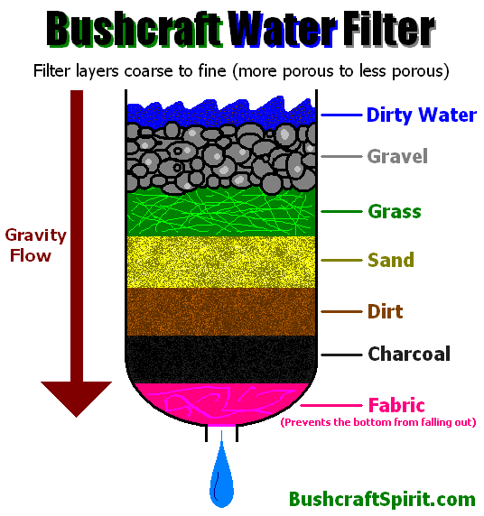

Purifying water
When dealing with dirty water, it is a good idea to filter it before boiling it to remove particulates of animal waste and other sediment, which can harbor viruses and bacteria.
You can easily make a bushcraft water filter with just some common ingredients like gravel, sand, and charcoal from a fire. The layers that the water passes through should go from coarse to fine (heavy porous to less porous).
Having every filter layer illustrated below is not necessary. Finest layers are the most important, especially the charcoal which is the most effective and can absorb chemicals.
Bushcraft water filter
Another method for filtering dirty water is to dig a hole in the ground a couple feet away from the source of contaminated water, such as a pond contaminated with animal feces. Water will usually fill the hole slowly, being filtered by the ground between the hole and water source.
Once the water in the hole stops rising, let it sit for about 30 minutes for any sediment to sink to the bottom. This filters out the heavy contamination and possibly some parasites, but should still be boiled or pasteurized for absolute safety.
Filtering in general will NOT remove chemicals from water. Water must be distilled to separate it from all chemicals.
If you find a stream or body of water, the best way to fill up your water bottle is to hold it a few inches under the surface facing downstream. This is the cleanest section and avoids stuff that floats on the top and the sediment towards the bottom.
Sterilization
You should always boil any water you find to kill any pathogens that could make you sick, except in rare occasions when you know the water is clean, for example a limestone seep or freshly melted glacier water.
If you are stuck with a plastic or wood container that cannot be heated to boiling, you can still kill the pathogens in the water by pasteurizing it. Heat the water to 150 degrees F (65 C) for about 20 minutes and it should be safe to drink.
You probably won't have a thermometer with you in the bush, but if the water burns your hand when you touch it it is probably hot enough. You may want to experiment at home to learn what 150 F feels like on your hand.
One way to bring water to a boil is by using hot rocks heated in a fire. This is useful when you have a container that cannot be heated directly on a fire. Drop several hot rocks into the container with water, until it boils. This works well in an assortment of containers, including hard plastic and dense fabric that is capable of holding water.
Be careful when heating rocks in a fire, some types of stones can break and send shrapnel flying when heated too quickly. Stones with water in them are especially likely to break or explode. Don't touch hot rocks with your hands, instead use sticks or other rocks to grasp them.
Almost any water can be sterilized and made drinkable by filtering and boiling it, except salt-water which requires distillation. You can also get store bought iodine tablets that will sterilize water without requiring heating.
{kind=link}